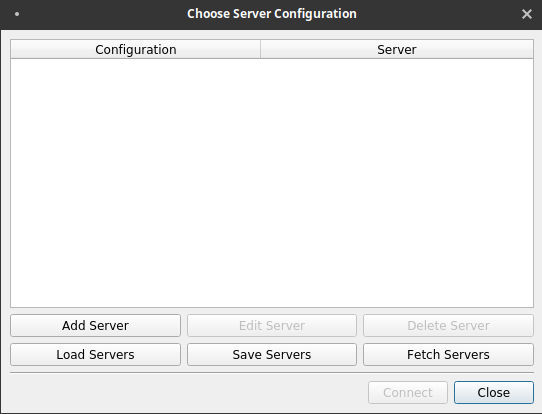
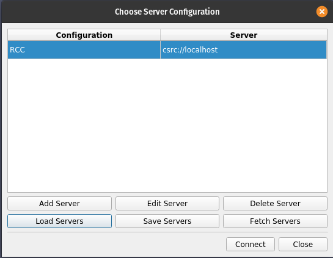
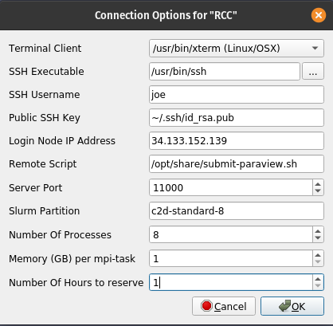
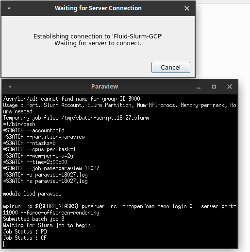

Last Updated: 2022-03-15
What you will build
In this codelab, you are going to deploy an auto-scaling research computing cluster on Google Cloud that comes with OpenFOAM®, Paraview, and mesh generation tools. You will use this infrastructure to simulate compressible flow past a NACA0012 aerofoil with OpenFOAM® and visualize results using Paraview in a local-client to cloud-server configuration.
What you will learn
- How to deploy a research computing cluster on Google Cloud using Terraform
- How to run OpenFOAM® in parallel on Google Cloud Platform using a Slurm batch job
- How to connect your local Paraview client to Paraview-server on Google Cloud.
Recommended Reading
To accompany this codelab, we recommend reading the following documentation that will help you familiarize yourself with necessary elements of Google Cloud and Fluid Numerics' Research Computing Cluster.
- Working with Quota on Google Cloud
- Google Compute Engine Regions and Zones
- Research Computing Cluster Architecture
- Submitting Batch Jobs
What you will need
- GSuite, Cloud Identity, or Gmail Account with an SSH key attached
- Google Cloud Platform Project with Billing enabled
- Project owner role on your GCP Project
- Sufficient Compute Engine Quota (24 c2d vCPUs and 100 GB PD-Standard Disk)
- Paraview 5.10.0 installed on your local workstation
In this section, you will deploy an auto-scaling research computing cluster that includes the Slurm job scheduler, OpenFOAM®, and Paraview.
- Open your Cloud Shell on Google Cloud.
- Set your Google Cloud project, replacing [PROJECT-ID] with your Google Cloud project ID.
gcloud config set project [PROJECT-ID]
- Clone the research-computing-cluster repository from Fluid Numerics. This repository hosts example Terraform deployments for RCC solutions.
cd ~ git clone https://github.com/FluidNumerics/research-computing-cluster.git ~/research-computing-cluster
- Change to the
tf/rcc-cfddirectory:
cd ~/research-computing-cluster/tf/rcc-cfd
- Create and review a terraform plan. Set the environment variables
RCC_NAME,RCC_PROJECT, andRCC_ZONEto specify the name of your cluster, your GCP project, and the zone you want to deploy to.
export RCC_PROJECT=<PROJECT ID> export RCC_ZONE=<ZONE> export RCC_NAME="cfd-demo"
- Create the plan with the make command. The provided Makefile will concretize the basic.tfvars.tmpl file to create basic.tfvars; this is a Terraform HCL file that defines the attributes of your RCC cluster. Additionally, the make plan directive will initialize terraform and create a deployment plan for you to review.
make plan
- Deploy the cluster. The setup process can take up to 5 minutes.
make apply
- SSH to the login node created in the previous step. You can see this node in the previous step (probably called cfd-demo-login0). You can do this by clicking on the SSH button next to the list of VM Instances in the console menu item Compute Engine -> VM instance.
Option: This pair of gcloud commands will figure out the login node name and SSH into it:
export CLUSTER_LOGIN_NODE=$(gcloud compute instances list --filter="name ~ .*login.*" --format="value(name)" | head -n1)
gcloud compute ssh ${CLUSTER_LOGIN_NODE} --zone ${RCC_ZONE}
- Once you are connected to the login node, to verify your cluster setup, check that OpenFOAM is available.
$ spack find openfoam-org ==> In environment /opt/spack-pkg-env ==> Root specs -- linux-None-x86_64 / gcc@10.3.0 ------------------------------- openfoam-org@8%gcc@10.3.0 +metis ==> 1 installed package -- linux-centos7-x86_64 / gcc@10.3.0 ---------------------------- openfoam-org@8
- Run sinfo to list the available partitions. You should see four partitions, like what is shown below.
$ sinfo PARTITION AVAIL TIMELIMIT NODES STATE NODELIST c2d-standard-8* up infinite 25 idle~ cfd-demo-compute-0-[0-24] c2-standard-8 up infinite 25 idle~ cfd-demo-compute-1-[0-24] c2-standard-60 up infinite 25 idle~ cfd-demo-compute-2-[0-24] c2d-standard-112 up infinite 25 idle~ cfd-demo-compute-3-[0-24]
The deployment you have just created consists of a login node, controller, networking, and firewall rules that will help you run OpenFOAM® and work with Paraview in a client-server configuration. The compute partitions provide you with the AMD Epyc Milan CPU platform (c2d-standard-8 & c2d-standard-112) and the Intel Cascadelake (c2-standard-8 & c2-standard-60) CPU platform.
The c2d partitions deploy compute instances with a zen3 optimized OpenFOAM installation. The c2 partitions deploy compute instances with a cascadelake optimized OpenFOAM installation. When running the benchmarks in this codelab, we will provide instructions for running on the c2d instances, but we encourage you to experiment with running the same benchmark on the two different CPU platforms to get a feel for the difference in performance when running on different platforms.
In this section, you will submit a Slurm batch job to run the NACA0012 tutorial included with OpenFOAM®. To help you with this, the RCC-CFD solution comes with an example Slurm batch script (/opt/share/openfoam.naca0012.sh).
This example batch script can also be used as a starting point for other OpenFOAM® jobs on the cluster. This script executes pre-processing steps to set up the NACA0012 Aerofoil demonstration and then runs the NACA0012 demo in parallel using MPI and the rhoSimpleFoam solver.
- From the cluster's login node, copy the example Slurm batch script to your home directory.
cp /opt/share/openfoam.naca0012.sh ./- Submit the batch job using sbatch.
sbatch --partition=c2d-standard-8 --ntasks=8 --mem=5G --cpus-per-task=1 openfoam.naca0012.sh
When submitting the job, you can control which partition is used with the --partition flag. In this example, we use the c2d-standard-8 partition to run on the AMD Epyc Milan instances.
The number of MPI tasks to use to run the job is controlled by the --ntasks flag, which is set to 8 in this example. In the openfoam.naca0012.sh script, you'll notice that mpirun is launched using -np ${SLURM_NTASKS}, so that the number of Slurm tasks is mapped to the number of MPI processes used to run rhoSimpleFoam.
We set the amount of memory required for the simulation to 5G using the --mem flag, as this demo requires at most 5GB of memory. While this flag is not required, specifying the amount of memory required for a simulation is good practice as it can help you further right-size instances for your simulations.
Last, we set the number of vCPU per MPI rank using the --cpus-per-task flag, which we've set to 1. In this case, each MPI rank is given a single vCPU so that the simulation runs on a single c2d-standard-8 instance.
After you've submitted the job, you can wait for the job to complete. If you run squeue, you can monitor the status of your job. The job status codes below will help you better understand what is happening during the lifetime of your job:
CF- The compute instance is in a "configuring" stage. When a node is marked asCF, Slurm is actively provisioning the compute node and is waiting for a connection between slurmctld on the controller and slurmd on the compute node.R- The compute instance is actively running your job.CG- The job is in a completing stage. At this point, your job is finished and Slurm is working on resetting the node status to idle so that it can receive more work, if scheduled.
When the job completes, you will have the aerofoilNACA0012 OpenFOAM® simulation case directory in your home directory and the contents should look similar to what is shown below.
$ ls aerofoilNACA0012/
0 1050 1200 1350 150 300 450 550 700 850 Allclean dynamicCode log.transformPoints processor1 processor4 processor7
100 1100 1250 1400 200 350 50 600 750 900 Allrun log.blockMesh postProcessing processor2 processor5 system
1000 1150 1300 1410 250 400 500 650 800 950 constant log.extrudeMesh processor0 processor3 processor6In this section, you will use Paraview on your local workstation to connect to paraview server, deployed to compute nodes on your cluster. You will need to know your login node's external IP address and your POSIX account username, assigned by OS Login, to complete this section.
To find your login node's external IP address, you can use the following command. The EXTERNAL_IP field for the login node is what you will need.
$ gcloud compute instances list --project=[PROJECT-ID] NAME: cfd-demo-controller ZONE: us-central1-a MACHINE_TYPE: n1-standard-4 PREEMPTIBLE: INTERNAL_IP: 10.0.0.3 EXTERNAL_IP: STATUS: RUNNING NAME: cfd-demo-login0 ZONE: us-central1-a MACHINE_TYPE: n1-standard-4 PREEMPTIBLE: INTERNAL_IP: 10.0.0.2 EXTERNAL_IP: 34.133.152.139 STATUS: RUNNING
To find your POSIX account username that is assigned by OS Login, you can run the following command :
gcloud compute os-login describe-profile | grep username
To connect your local paraview client to a paraview server running on your cluster on Google Cloud, you will use a Paraview PVSC file that Fluid Numerics has developed. The PVSC file defines the steps to launch paraview server remotely on compute nodes in your cluster and set up a reverse SSH connection from the compute nodes back to the login node and ultimately to your local workstation. This configuration pushes rendering tasks to run on Google Cloud while the resulting graphics are sent back to your local paraview client for rendering.
- On your local workstation, make a directory called
paraview-pvsc/
mkdir ~/paraview-pvsc- Copy the
paraview-gcp.pvscfile from your login node toparaview-pvsc/
scp USERNAME@LOGIN-IP:/opt/share/paraview-gcp.pvsc ~/paraview-pvsc/- Start paraview from your terminal on your workstation.
paraview &- Click on the "Connect to Server" icon in the toolbar. This is the third icon from the left, near the open file icon.

- On the dialog that appears, click on Load Servers.
- Navigate to the paraview-gcp.pvsc file that you've copied from the cluster and click Open. 
- Click Connect.
- Fill out the form that appears, using settings that are consistent with your cluster and your firewall rule settings.
SSH username is your username provided by OS Login
Login Node IP Address is the login node's external IP address that you found previously
The Slurm partition should be set to c2d-standard-8, number of processes set to 8, memory (GB) per mpi-task is 1, and the number of hours to reserve is 1.

- Click Ok.
From here, your paraview client will launch an Xterm window. 
Within this window, a series of commands are run automatically for you.
- An SSH tunnel is opened with your RCC-CFD cluster's login node over the specified tcp port
- The /opt/share/submit-paraview.sh script is executed on the login to submit a batch job.
- The instructions in the batch job will launch Paraview server with the desired number of MPI ranks and create a reverse TCP connection back to the login node over the same port.
Additionally, you will be able to monitor the status of the node configuration.
Once the job starts and the Paraview server is connected, you will be able to open files in your Paraview client that are located on your Cloud CFD cluster.
Once connected, you can open aerofoilNACA0012/naca0012.foam on the cluster to visualize the OpenFOAM output.
In this codelab, you created an auto-scaling, cloud-native HPC cluster and ran a parallel OpenFOAM® simulation on Google Cloud Platform. You also learned how to connect paraview server, running in Google Cloud, to your local Paraview client to assist with data visualization and post-processing.